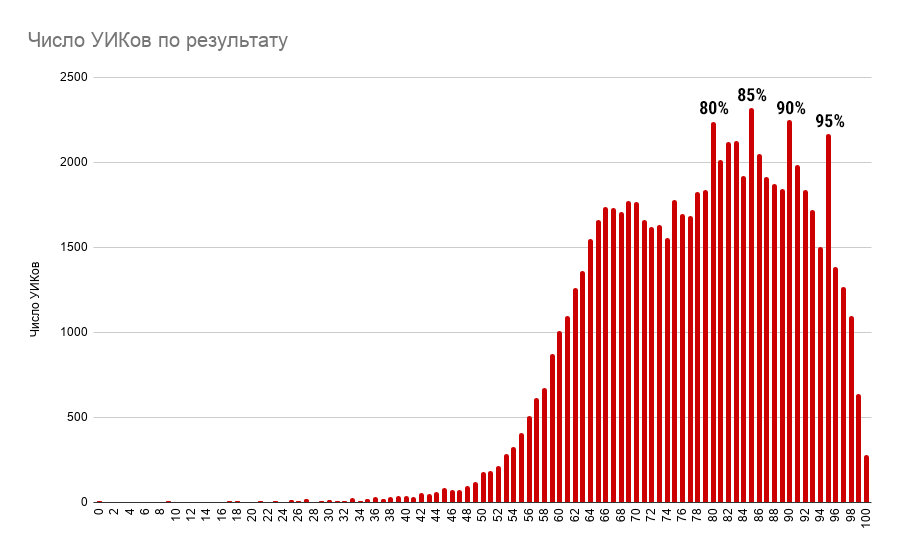
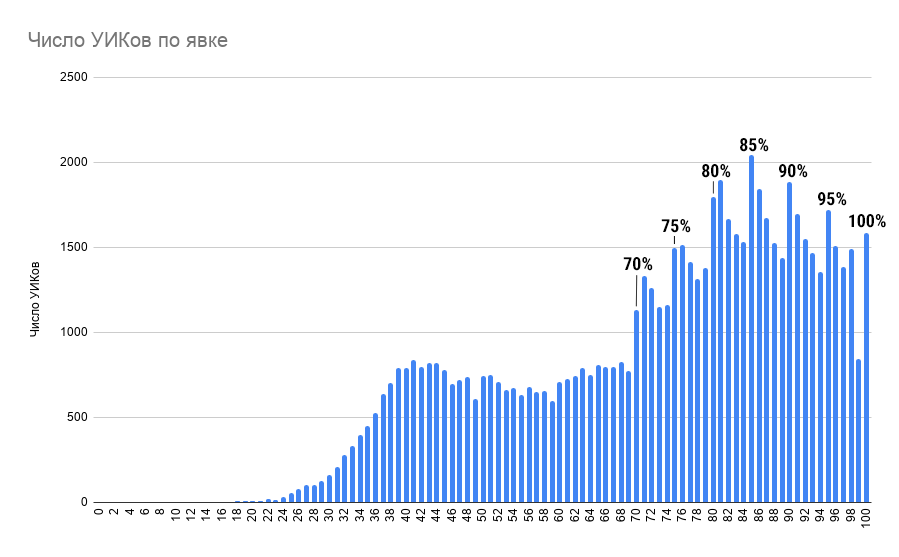
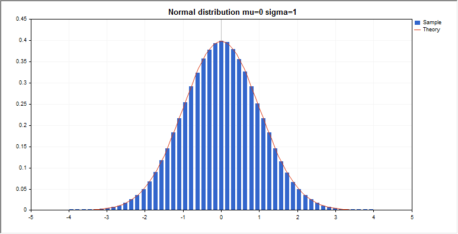

Поправке — НЕТ
C 25 июня по 1 июля 2020 года проходило голосование о поправках к Конституции РФ.
Многие граждане России высказались против этих поправок и выразили своё неодобрение изменений в Конституции, но из-за массовых нарушений и фальсификаций они всё же были приняты: Центризбирком объявил о том, что их якобы поддерживает 77,92% избирателей.
Это означает, что нужно продолжать выступать против неправомерных действий властей, и присоединяться к митингам и иным протестам против допущенной несправедливости.
Подробную картину, на которой видно как результаты на каждом УИКе, так и очевидные аномалии среди них, можно найти на отдельной странице.
К счастью, Центризбирком публикует подробную информацию обо всех участках, на которых проходило голосование (их более 90 тысяч по всей стране).
Благодаря этому становится возможно анализировать результаты статистически. Взгляните например, на этот график:

По горизонтали отложены итоговые проценты голосов «за», а вертикальные столбики показывают, на каком количестве УИКов был достигнут соответствующий результат. Например, видно, что УИКов с невероятным результатом ровно 95% больше двух тысяч на всю страну — а 94% или 96% можно увидеть только на полутора тысячах участков.
Вот аналогичная диаграмма, но здесь по горизонтали отложен не результат, а явка:

Почему-то и здесь заметно проступают «круглые» числа. Этому есть одно объяснение — на большом числе УИКов вместо честного подсчёта рисовались именно определённые показатели явки и результата. В случае же честного голосования на подобных графиках всегда должно быть видно нормальное распределение:

Разумеется, нет. Статистика показывает, что по всей стране были и те участки, где голоса считались справедливо (правда, их очень мало). Но даже там, где результаты были фальсифицированы, это было сделано с помощью вбросов и «дорисовывания» голосов за. И в том, и в другом случае, не будь в урне вашего голоса против — итоги были бы ещё сильнее скошены в пользу накрутчиков.
Не стоит расстраиваться. Победить возможно только не переставая сопротивляться. Продолжайте отстаивать своё мнение при любой предоставленной возможности — какой жульнической она бы ни была.